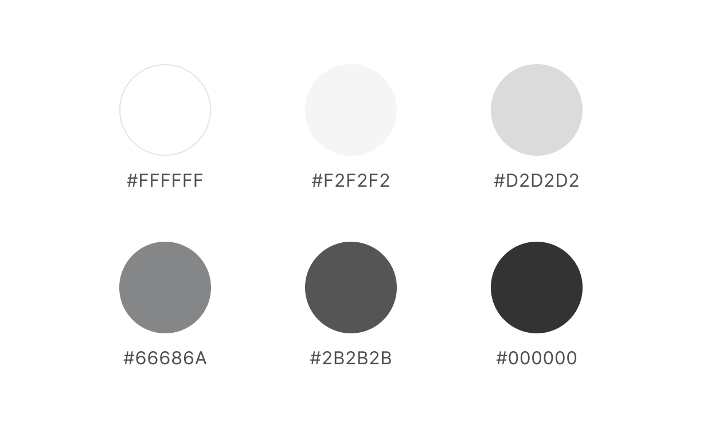
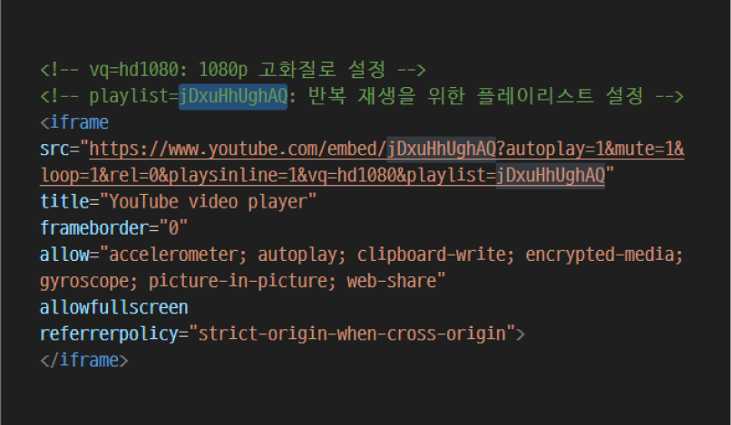

-
Redesign Site
Leeum
24.12 I Individual Project
#GSAP #Swiper
Goal
Project Goal
- 다양한 정보를 효율적으로 전달할 수 있는 직관적 인터페이스 제공
- GSAP와 ScrollTrigger를 활용한 동적 인터랙션 구현 능력 향상
Publishing
Publishing
- requestAnimationFrame을 활용한 부드러운 마우스 이동 구현
- GSAP ScrollTrigger를 활용한 가로 스크롤 애니메이션 구현
- GSAP.timeline을 활용하여 스크롤 시 각 섹션에 다양한 애니메이션 효과 적용
Style Guide
-
UI Vision
효율적인 정보 전달을 위한 직관적인 설계
-
Keywords
-
명료한
전시, 영상, 편의시설 등의
정보를 명료하게 구성 -
조화미
대조적인 요소를 균형 있게
결합하여 아름다움 추구 -
역동적
사용자 동작에 반응하는
인터랙션 디자인
-
-
Color Palette
 -
-
Typography (ko)
-
Typography (en)
-
Resolution
-
Issue
영상을 고화질로 계속 재생시킬 수 있을까?
- 유튜브의 기본 설정으로 인해 영상이 고화질(1080p)로 재생되지 않고, 영상이 한 번만 재생되고 종료됨
Solution고화질, 반복 재생 속성을 추가하여 해결하자!
- 고화질 (vq=hd1080): URL에 vq=hd1080 파라미터를 추가하여 영상이 1080p 해상도로 고정되도록 설정
- 반복 재생 (playlist와 loop): playlist에 영상 ID를 추가하고 loop=1 설정으로 동일 영상을 반복 재생
-
Issue
흰 배경에도 커서를 잘 보이게 할 수 있을까?
- 커서 색상을 흰색으로 지정했는데 ‘main-display’ 구간처럼 배경색이 흰색인 경우, 커서 색상이 배경과 구분되지 않아 시각적 가독성이 떨어짐
Solutionmix-blend-mode로 해결해보자!
- mix-blend-mode: difference; 는 배경과 요소의 색상 차이를 기반으로 색상을 계산하여 표시함
- 배경색이 흰색일 때, 커서가 검은색으로 반전되고, 배경색이 검은색일 때는 흰색으로 표시되어 자동 반전 효과 제공
- 이를 통해 동적이고 가독성 높은 커서 표시를 구현 가능
-
Issue
애니메이션 실행 후, 초기 상태로 돌아가게 할 수 있을까?
- to속성을 사용하여 애니메이션 실행 후 요소가 초기 상태로 돌아가지 않는 문제가 발생하여 css구조를 변경하여 해결했으나, 변경 없이 gsap만을 사용해 초기 상태로 돌아가고싶음
SolutionfromTo() 메서드 활용해보자!
- fromTo(): 애니메이션 시작(from)과 종료(to) 상태를 명확히 지정
- scrub: 스크롤 되돌림 시 초기 상태로 복구
- ScrollTrigger: 스크롤 범위를 설정해 자연스러운 동작 구현
Review
Takeaways
-
“사용자가 사이트 방문 시 무엇이 궁금할까?”라는 질문을 바탕으로 콘텐츠를 구성하며 사용자 입장에서 필요한 정보를 고민했고, 이를 통해 깊이 있는 설계를 경험할 수 있었습니다.
GSAP를 처음 사용하며 ScrollTrigger 구현 과정에서 많은 시행착오를 겪었지만, 문제를 해결하며 실력을 키웠습니다. 덕분에 기술적 자신감을 높여 앞으로의 프로젝트에서도 큰 자산이 될 것이라 생각합니다.